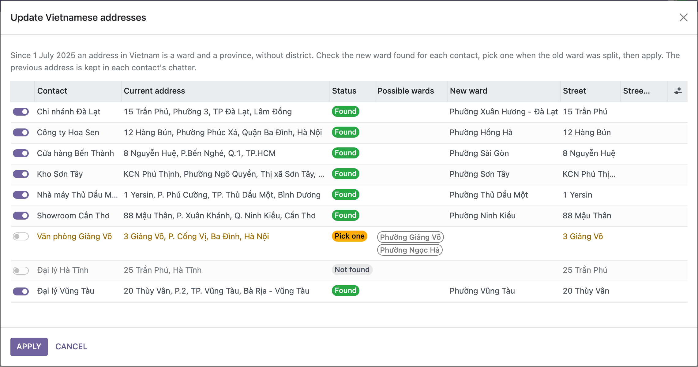
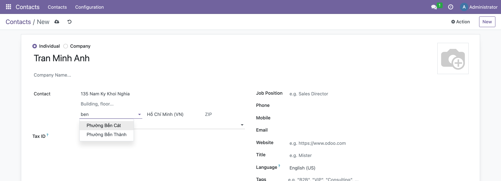

On 1 July 2025 Vietnam went from three levels of address (province, district, ward) to two: 63 provinces became 34, districts were abolished and about 10,000 wards became 3,321. Odoo 19 ships the 34 new provinces but no list of wards. This module adds the 3,321 wards and updates the addresses you already have, including those still written with the old provinces.

Existing contacts with their old address and the ward found for each.

Picking a ward, typed without diacritics, within the chosen province.
Every one of the 10,034 old wards that has a successor, written as "Phường X, Quận Y" or abbreviated as "P.X, Q.Y", comes back with the right ward. When the kinds are left out ("Phúc Xá, Ba Đình"), 92% come back right and the rest are mostly offered as a choice or not found. That is why nothing changes before you review it.
The units come from the vietnamese-provinces-database dataset (built from the General Statistics Office of Vietnam, up to resolution 388/NQ-UBTVQH16) and the dvhcvn/20250701 mapping of old wards to new ones, both under the MIT license.
Questions and requests: thanhphu2643@gmail.com